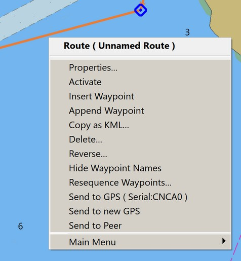
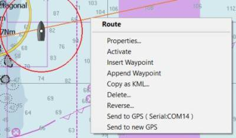
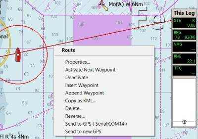
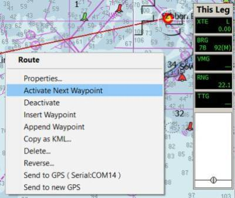
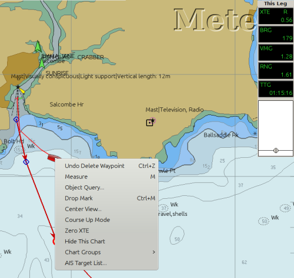
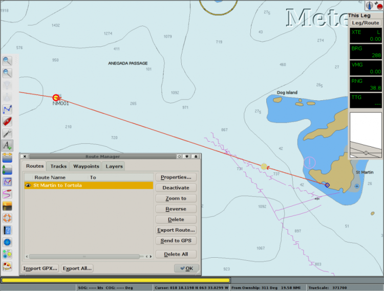
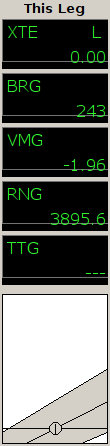
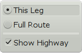

Activate a Route
Activate Route
The new route will be shown in blue to indicate it is an Inactive Route. Active routes are red.
Right-click on a Route Leg brings up a focused menu

To Activate the Route, select Activate. For more detail see Activating Routes
To prevent deleting a route by mistake, a confirmation dialog is activated when pressing Delete from the popup menu, if the box Confirm deletion of tracks and routes is ticked in Options > User Interface. If a Waypoint is deleted, the right click menu will have “Undo Delete Waypoint” in the right click menu, with a hotkey Ctrl + Z.
Route Manager
In OpenCPN multiple routes can be handled in a couple of different ways. Many routes can be created in a session or imported into a session.
The visibility of every route is controlled in the Route Manager. There is an "eye" to the far left on the line for each route. This works as a toggle switch. A plain Eye means that the route is visible, while an eye with a red cross means that it’s hidden. This allows you to show only the routes of current interest.
Another way is to create and export routes, and later import them when needed. To keep the chart clear of useful, but not currently needed, routes follow these steps:
-
Create a folder called, 'GPX_Routes', or another suitable name.
-
Create your route.
-
Use the Route Manager to export the route with a descriptive file name and save it in GPX_Routes.
-
Delete the route from the chart.
-
Repeat for each new route.
-
When needed, simply use the Route Managers "Import" Button to open the route file.
You can export any number of routes to one big file or export each route to a separate file.
When you import a route that uses shared waypoints those waypoints will be left on the chart when you delete the route. To get rid of the way points left on the chart when a route has been deleted follow these steps.
-
Open the Route Managers Waypoint tab and press the "Delete All" button
-
Say 'Yes' to: 'Are you sure you want to delete <ALL> waypoints?'
Exporting and Importing Routes and Marks
To learn how to export and import routes, waypoints, tracks, and layers
read the Route and Mark
Manager section of the manual. To open the Route & Mark Manager click
the
 button.
button.
Activating Routes and Active Route Console
Activating a Route designates it as the Active Route which sets OpenCPN to issue navigation commands to the NMEA bus. This action serves multiple purposes:
-
Opens the Active Route Console which provides useful navigation information.
-
If an autopilot is connected and engaged, OpenCPN sends commands to steer the boat along the route, automatically switching from one waypoint to the next as each is reached.
-
If no autopilot is engaged, activating a route provides valuable navigation information. The navigation commands sent by OpenCPN can be displayed on compatible on-deck displays, offering real-time guidance for manual steering.
Activating a waypoint sets that waypoint as your next destination, used when your next waypoint is not at the beginning of a route.
Right clicking on the Route, changes the color from blue to orange and brings up a comprehensive menu. Clicking "Activate Route" or performing the same action through the Route Manager changes the route color to red and a new route information window appears on the right side of the display. This Active Route Console displays data particular to the Active Leg (XTE, Bearing, VMG, RNG & TTG) or the Active Full Route.

Right click on a an Active Route, brings up a menu with a choice for "Deactivate".

Right click on a an Active Route, brings up a menu with a choice for "Activate next waypoint".

Zero XTE only shows in the right click menu if there is a cross track error. When selected it resets the present XTE (Cross Track Error) back to zero. "Zero XTE" is useful if you are offset from the route and want the autopilot to follow a direct course adjusted for your current position, rather than the position of the last route waypoint.

Active Route Console Window

The Active Route Console Window (upper right black box) appears in the screen when a Route is set to Active by selection of Activate from the Route Right Click menu.
To change the Font Sizes in the Active Route Console Window go to Options > User Interface > Fonts and pick "Console Legend" and "Console Value" and change the values.

XTE Cross Track Error. How far off course your boat is. "L"=left,
"R"=right
BRG Direction to next waypoint.
VMG Velocity made good to next waypoint
RNG Distance to next waypoint.
TTG Time To Go to next waypoint.
Showing Active Leg & Active Full Route Data
Right clicking at the top title "This Leg" of the Black Active Route Console Window above, brings up this dialog:

Select the "Current Leg" or the "Full Route" Active Route Console.
There is an option to Show or Hide the "Highway".
==== Activate Route ====
Click "Activate Route" to see that this extension worked.

Once again mark "Route Properties" in the right-click dialog. #3 is the last wpt in our "new" temporary route. The "Extend Route" button is highlighted, so we click it.